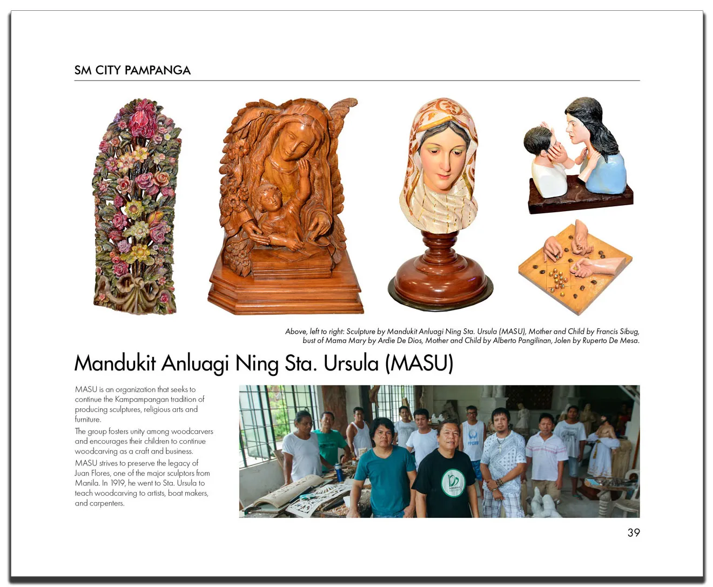
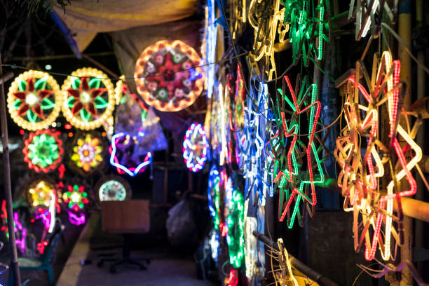
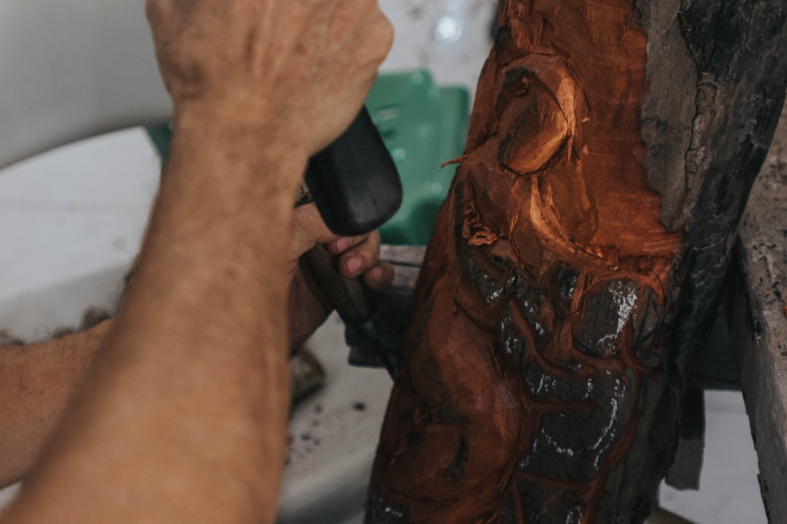
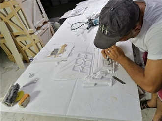
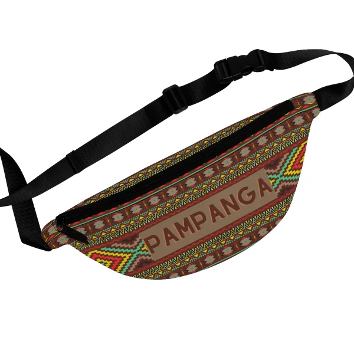
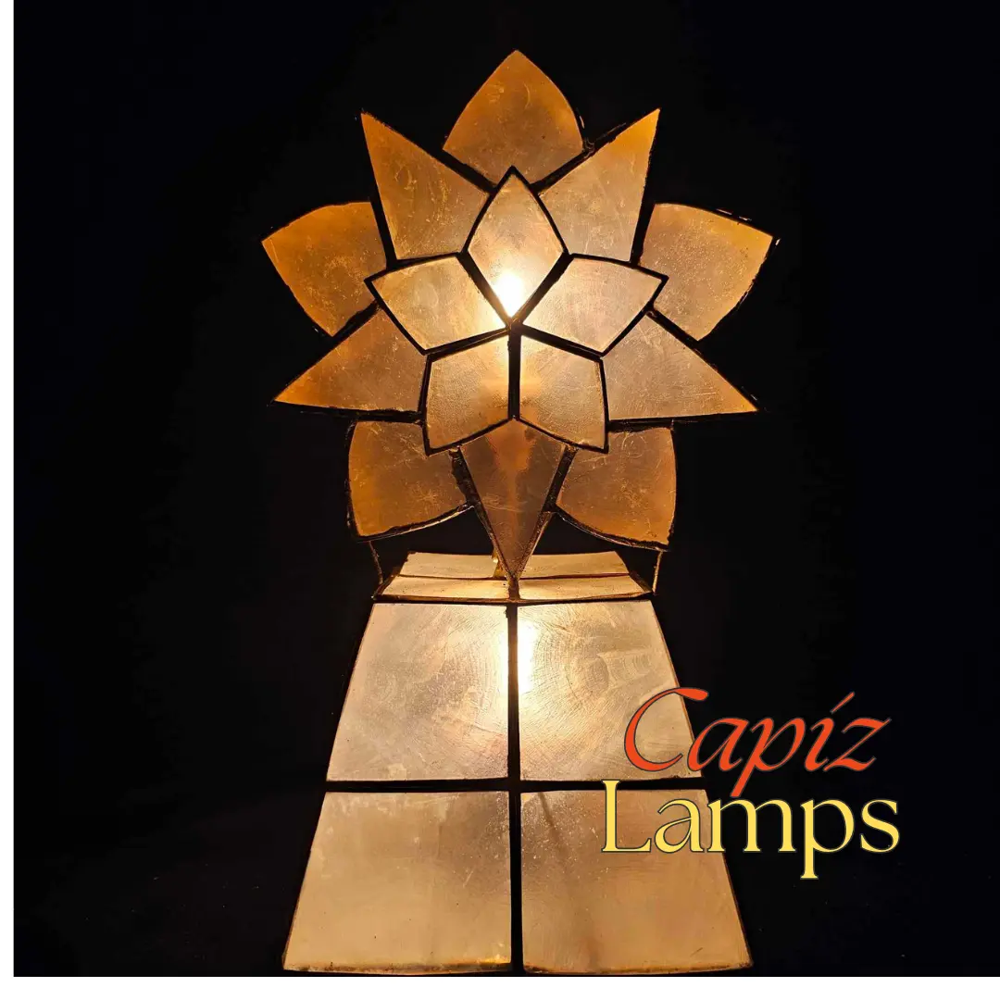
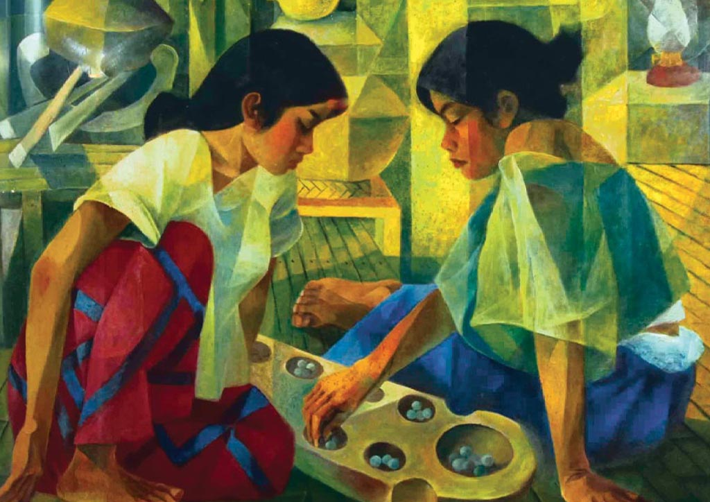

Kapampangan artisanship — a living tradition of creativity
Kapampangans have long been celebrated for their extraordinary craftsmanship. From the iconic Christmas parol to intricate woodcarvings and fine silverwork, the province's artisans carry forward centuries of creative tradition.

IconicSan Fernando is the parol-making capital of the Philippines. Artisans craft these elaborate bamboo-and-capiz lanterns by hand, a tradition passed down through generations.

TraditionalPampanga's woodcarvers produce religious figures, furniture, and decorative pieces with extraordinary skill — many destined for churches and collectors worldwide.

HeritageSanta Rita is known for its marble and stone carvers, producing garden ornaments, religious statues, and architectural elements.

TraditionalFine embroidery work on traditional Kapampangan garments, table linens, and barong tagalog continues to be practiced in several towns of Pampanga.

Intricate chandeliers and lamps made from capiz shells are a hallmark of Pampanga's decorative crafts, beloved throughout the country.

Pampanga has produced many of the Philippines' finest painters and sculptors, with a thriving contemporary art scene in Angeles and San Fernando.